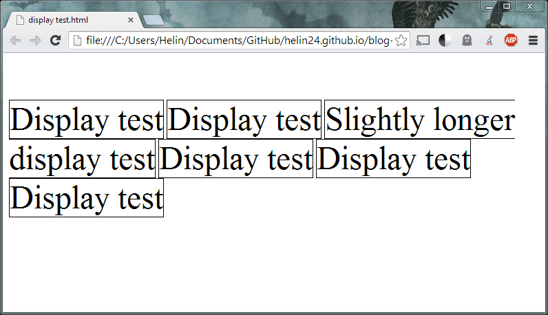
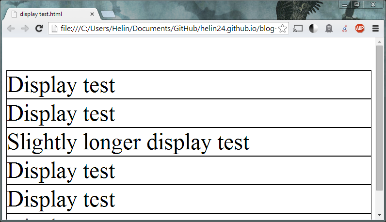
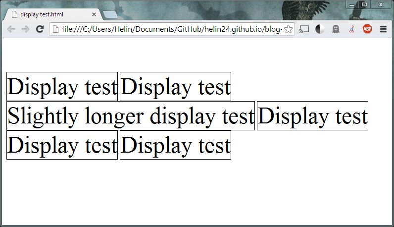

Inline vs. Inline Blocks
06/15/14
In working with HTML and CSS, we spend much of our time considering rectangles of content and where to place them - whether it is rectangles in a row, in a column, in a grid with wide spaces between, and many other concerns. The distinctions between inline and inline-block elements become important because these properties determine whether a rectangle can be placed in a row, whether we can control spacing between rectangles, etc.
To understand the difference between inline elements and inline-block elements, it's necessary to also understand block elements. Below I've pasted the code for an element with a black border, where I've varied the display: property with the values "inline," "block," and "inline-block."




We see that inline elements behave like text, with many occupying one horizontal line, while the block elements are vertically stacked, allowing only one element per line. In this situation, inline-block elements are very similar to inline elements, with the exception that text which has come up against the limits of the browser window will cause the entire block to be bumped to the next row (rather than "slightly longer display text" being split up into two lines).
Next, we compare the behavior of these three elements when provided a specific width.


Here, we note that adding a fixed width has changed the appearance of the block and the inline-block, reducing their width and forcing text to the next line if necessary. Note that even with a width that is less than half of the browser size, the block elements each occupy independent lines. Inline elements do not respect height and width specifications, so no change is visible from the previous version - the elements continue to behave like text, hugging whatever is contained within.
Finally, we consider the effect of fixing height and adding margins.


The inline elements now have wider margins horizontally, creating more space between elements within each line. However, the height specification does not affect the vertical size of the elements and no vertical margins have been inserted. This is not the case for the block and inline-block elements, which are now the same size and have uniform margins along all sides.
Summary
The distinctions between inline, block, and inline-block are useful to know while organizing custom divs, but also while using elements that naturally include these display properties.
- Inline
- Block
- Inline-block